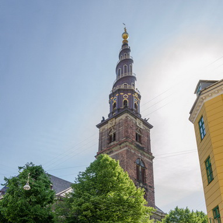

Фотографии дня


21. 8:30 Дом (Dronningens Tværgade )
20 мин – дорога пешком + Метро
22. 9:20 Церковь Спасителя (Vor Frelsers Kirke)
!!!C 9:30 !! 30 мин – посещение,
20 мин – дорога пешком + Метро
23. 10:30 Замок Росенборг (Rosenborg Slot)
1 час – посещение,
5 мин – дорога (400 м) пешком
24. 11:40 Государственный музей искусств (SMK)
1 час – посещение,
10 мин – дорога (600 м) пешком + 1 остановка
25. 13:00 Маркет еды (Torvehallerne )
20 мин – осмотр,
2 мин – дорога (100 м) пешком
26. 13:15 Церковь Богоматери (Vor Frue Kirke)
15 мин – посещение,
2 мин – дорога (100 м) пешком
27. 13:30 Обед – 30 мин
Samos Restaurant (Skindergade 29),
5 мин – дорога (300 м) пешком
28. 14:00 Круглая башня (Rundetaarn)
20 мин – посещение,
30 мин – дорога Метро + (600 м) пешком
29. 15:00 National Aquarium Denmark (Den Blå Planet)
2 часа – посещение,
15 мин – дорога (метро)
30. 17:15 Аэропорт